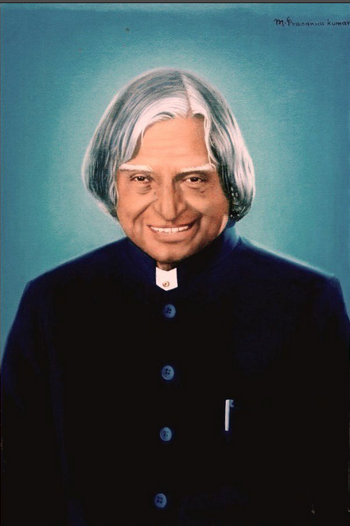

A.P.J Abdul Kalam
1931-2015
Missile Man of India
Avul pakir Jainulabdeen Abdul Kalam was one of India’s most celebrated Presidents. He was known for his dedication to the country and his efforts to improve the lives of its citizens. Dr. Kalam served as President from 2002-2007, during which time he made significant contributions to India’s economic and social development. Under Dr. Kalam’s leadership, India made great strides in improving its infrastructure and boosting its economy. He also helped to improve the education system and expand access to healthcare. Dr. Kalam was a strong advocate for women’s rights and worked to empower women across India.
Biographies
- spearheading India's nuclear weapons program and successfully conducting nuclear tests in 1998, making India a nuclear power
- increasing access to education and technology for all Indians, regardless of socioeconomic background
- initiating major economic reforms that helped boost India's GDP and make it one of the world's fastest-growing economies
- establishing India as a leading player on the global stage through strong diplomacy and international relations